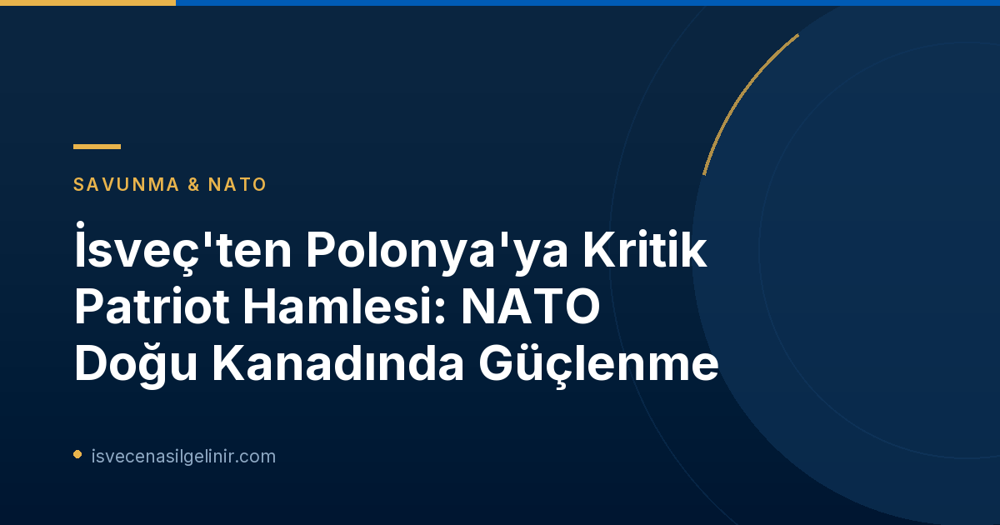

İsveç'ten Polonya'ya Tarihi Patriot Gönderimi: Neden Önemli?
NATO'nun Doğu Kanadında Artan Gerilim
Rusya'nın Ukrayna'ya karşı başlattığı savaş, Avrupa'da güvenlik dengelerini kökten değiştirirken, NATO'nun doğu kanadındaki gerilimi de zirveye taşıdı. Polonya, Ukrayna'ya komşu olması ve NATO'nun kilit bir üyesi olması nedeniyle bu gerilimin merkezinde yer alıyor. Rusya'nın bölgedeki askeri faaliyetleri ve tehditleri, ittifak ülkelerini savunma kapasitelerini güçlendirmeye yöneltiyor.
Patriot Hava Savunma Sistemi: Kalkanın Gücü
Patriot, dünyanın en gelişmiş mobil hava savunma sistemlerinden biridir. Balistik füzeler, seyir füzeleri ve insansız hava araçları (İHA) gibi çeşitli hava tehditlerine karşı etkili bir koruma sağlar. İsveç'in bu sistemi Polonya'ya göndermesi, bölgedeki hava sahası güvenliğini önemli ölçüde artıracak ve olası saldırılara karşı caydırıcı bir güç oluşturacaktır.
Operasyonun Detayları ve İsveç'in Katkısı
Rzeszow'daki Lojistik Üssünün Korunması
İsveç'in Patriot sistemini konuşlandıracağı yer, Polonya'nın Rzeszow şehrinde bulunan kritik bir lojistik üssüdür. Bu üs, Ukrayna'ya gönderilen askeri ve insani yardımların ana geçiş noktalarından biridir. Her ay yaklaşık 18.000 ton malzemenin aktığı bu üssün güvenliği, Ukrayna'ya verilen desteğin sürdürülebilirliği açısından hayati önem taşımaktadır. İsveçli birliklerin görevi, bu üssü düşman balistik füzelerine ve dronlara karşı korumaktır.
Görev Süresi ve Personel Sayısı
Hava Savunma Alayı Komutanı Sofia Westermark'a göre, bu operasyon İsveç'in bir NATO müttefiki olarak gerçekleştirdiği "en karmaşık" görevdir. İsveç, yaklaşık 100 subay ve askerini bu göreve tahsis edecek. Operasyonun 1 Aralık'ta başlaması ve bir sonraki hükümetin kararına bağlı olarak yedi aya kadar sürmesi planlanıyor.
İsveç'in Polonya Patriot Görevine Dair Anahtar Bilgiler
- Sistem: Patriot Hava Savunma Sistemi
- Görev Yeri: Rzeszow, Doğu Polonya
- Personel Sayısı: Yaklaşık 100 subay ve asker
- Başlangıç Tarihi: 1 Aralık 2026
- Tahmini Süre: 7 aya kadar
- Hedef: Askeri ve lojistik üssünü düşman füzelerinden ve dronlardan korumak
- Kilit Rol: Ukrayna'ya aylık 18.000 ton malzeme akışının güvenliğini sağlamak
Savunma Bakanından Açıklamalar ve Riskler
Pål Jonson: "Keskin Operasyonlar"
İsveç Savunma Bakanı Pål Jonson (M), operasyonun taşıdığı risklere dikkat çekerek, bunun "müttefiklerle birlikte yürütülen keskin operasyonlar" olduğunu belirtti. Jonson, Rusya'nın uzun menzilli muharebe yeteneklerini geliştirdiğini ve bu nedenle İsveç'in hava savunmasına büyük yatırımlar yaptığını vurguladı. Bakan, bu operasyonun aynı zamanda Rusya'nın Avrupa'nın Ukrayna'ya yardımına olumsuz bakması nedeniyle oluşan aktif tehdit ortamında gerçekleştiğini de ekledi.
İsveç'in Hava Savunmasına Etkileri
Bir kısım materyalin başka bir bölgeye gönderilmesinin İsveç'in kendi hava savunmasını etkileyeceği kabul edilmekle birlikte, Sofia Westermark, bir NATO müttefiki olarak İsveç'in şu anda en iyi savunmayı Polonya'daki bu görevi yerine getirerek yaptığını ifade etti. Bu, ittifak içindeki dayanışmanın ve ortak sorumluluğun bir göstergesidir.
İsveç'in NATO Yolculuğu ve Geçmişteki Destekleri
Yeni Bir NATO Müttefiki Olarak İsveç
Uzun yıllar süren tarafsızlık politikasının ardından NATO'ya katılan İsveç, ittifakın kolektif savunma kapasitesine önemli katkılar sunmaya başlamıştır. Polonya'daki Patriot görevi, İsveç'in yeni rolünü ve bölgesel güvenliğe verdiği önemi açıkça ortaya koymaktadır. Bu tür görevler, İsveç'in NATO içindeki entegrasyonunu hızlandıracak ve caydırıcılık yeteneklerini pekiştirecektir.
Gripen Uçaklarıyla Önceki Katılım
İsveç, daha önce de Polonya'daki NATO misyonlarına Gripen savaş uçaklarıyla katılarak Ukrayna'ya destek olma amacı güden bu ittifak operasyonlarına katkıda bulunmuştu. Bu geçmiş deneyimler, İsveçli askeri personelin karmaşık uluslararası görevlerdeki yetkinliğini göstermektedir. İsveç Vatandaşlık Sınavı ve İsveç'te yaşam hakkında daha fazla bilgi için sitemizi ziyaret edebilirsiniz.
Referanslar:
- SVT Nyheter Inrikes: https://www.svt.se/nyheter/inrikes/regeringen-kallar-till-presstraff-om-sakerhetslaget
İsveç Göçmenlik Süreçleri Hakkında Bilgi mi Arıyorsunuz?
İsveç'e taşınma, eğitim, çalışma veya vatandaşlık konularında merak ettikleriniz için kapsamlı rehberlerimize göz atın. sverigemedborgarskapsprov.com adresinde İsveç'teki yaşamla ilgili en güncel bilgilere ulaşabilirsiniz.